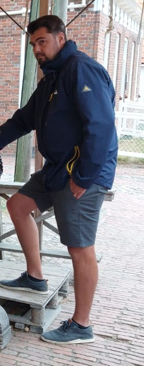

Mijn naam is Wout Visser en ben 39 jaar. Momenteel werkzaam in de binnenvaart. Geboren en getogen op het water. Het varen zit in mijn bloed. Toen ik 5 jaar was stond ik al met mijn vader achter het roer.
Na mijn opleiding werd dit mijn beroep en was ik als 19 jarige de jongste binnenvaartschipper van Nederland. Op dit moment zit ik al 25 jaar bij hetzelfde bedrijf en ook Schipper op een tankschip.
Ik doe dit nog steeds met veel plezier.
